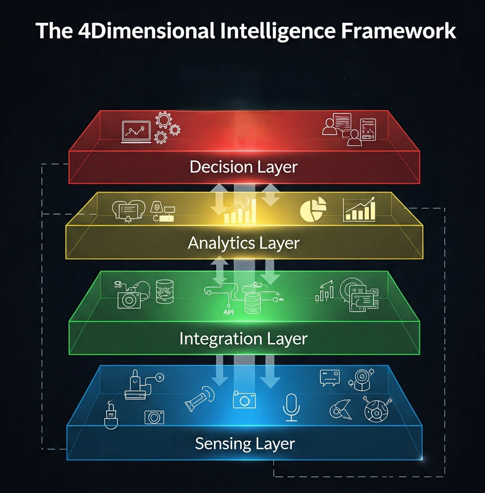

Resilient
Distributed architecture, secure data handling, redundancy, and operational continuity under degraded conditions.
R4 Aerospace & Defence Private Limited develops distributed satellite systems, multi-modal sensing architectures, and analytical platforms for sovereign and civil applications.
The four principles organise system architecture, mission operations, analytical processing, and decision delivery.
Distributed architecture, secure data handling, redundancy, and operational continuity under degraded conditions.
Adaptive tasking, event prioritisation, low-latency processing, and application-specific analytical configuration.
Reduced sensing-to-decision latency through onboard computation, automation, and direct system integration.
Synchronous multi-modal observation designed to produce coherent, corroborated, and actionable evidence.
R4 is developing a vertically integrated capability that links spacecraft architecture, payload coordination, mission operations, geospatial processing, artificial intelligence, information security, and customer-system integration.

Complete preliminary design activities, payload trade studies, formation concepts, ground-segment architecture, and application requirements.
Advance critical design, payload and platform testing, analytical MVP development, interface validation, and pilot preparation.
Target pathfinder deployment, commissioning, calibration, reference-data validation, and early-access customer programmes.
Scale observation capacity, geographic coverage, revisit performance, analytical automation, and institutional service delivery.
Architecture, systems engineering, payload integration, formation flight, reliability, verification, and mission operations.
SAR, optical, thermal, RF, geospatial science, machine learning, uncertainty analysis, and Earth-observation applications.
Defence, government, industry, research, regulatory, commercialisation, and international partnership development.
The Insight Set is a coordinated cluster comprising one microsatellite and two CubeSats. Payload and computing functions are distributed across the cluster to support synchronous SAR, optical, thermal-infrared, and cooperative RF observation.
Synchronous acquisition reduces temporal disagreement between sensing modalities. This is particularly important when targets, hazards, vessels, infrastructure states, or environmental conditions change rapidly.
The platform can produce geospatial layers, detections, change products, anomaly indicators, risk scores, event alerts, analytical dashboards, secure APIs, and evidence reports with confidence metadata.
No. The sensing and analytical infrastructure is dual-use and can support public safety, environmental monitoring, agriculture, infrastructure, energy, maritime safety, insurance, and other regulated civil or commercial applications.
Potential pathways include mission studies, application validation, data-pipeline integration, pilot projects, research collaboration, subsystem partnerships, and strategic investment discussions.